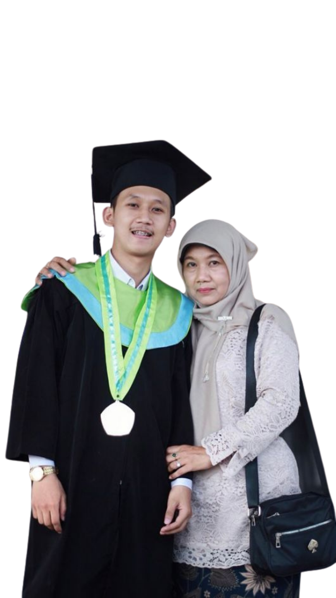
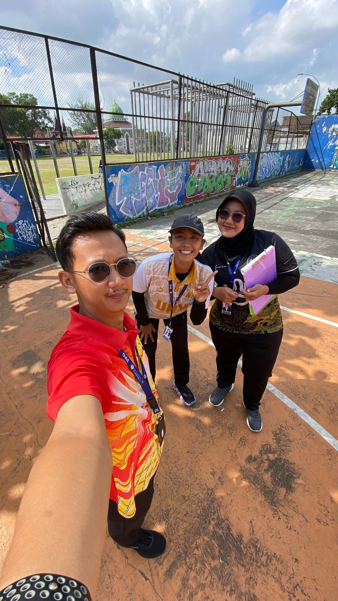

Hallo! Saya
Muhammad Qoid Falahi
Mahasiswa Pendidikan Profesi Guru (PPG) Calon Guru di Universitas Negeri Yogyakarta. Selamat datang di ruang rekam jejak E-Portofolio Praktik Pengalaman Lapangan (PPL) 1 saya.
Program
PPG Prajabatan 2025/2026
LPTK
Universitas Negeri Yogyakarta
Sekolah PPL
SMA Negeri 4 Yogyakarta
Timeline PPL 1
23 Maret - 30 April 2026
Sen
Sel
Rab
Kam
Jum
Sab
Min
Minggu 1: 23-29 Maret
Mar 23
📋 Observasi lingkungan belajar
Mar 24
🧑🏫 Identifikasi karakteristik peserta didik
Mar 25
Mar 26
Mar 27
Minggu 2: 30 Mar - 5 Apr
Mar 30
📝 Penyusunan Modul Ajar
Mar 31
Apr 1
Apr 2
📄 Pembuatan LKPD & Instrumen asesmen
Apr 3
Apr 4
Apr 5
Minggu 3: 6-12 April
Apr 6
Apr 7
Apr 8
🎥 Praktik mengajar 1 (Observasi teman sejawat)
Apr 9
🖥️ Implementasi TPACK & CT
Apr 10
Apr 11
Apr 12
Minggu 4: 13-19 April
Apr 13
Apr 14
Apr 15
📊 Asesmen formatif & sumatif
Apr 16
Apr 17
💬 Refleksi bersama guru pamong
Apr 18
Apr 19
Minggu 5: 20-26 April
Apr 20
Apr 21
Apr 22
Apr 23
📸 Dokumentasi & penyusunan portofolio
Apr 24
🔁 Perbaikan perangkat pembelajaran
Apr 25
Apr 26
Minggu 6: 27-30 April
Apr 27
Apr 28
📑 Finalisasi laporan PPL 1
Apr 29
Apr 30
✅ Evaluasi & umpan balik
Dokumen & Artefak PPL 1
Hasil Observasi
Laporan observasi lingkungan belajar dan karakteristik peserta didik.
Baca Dokumen →Galeri Kegiatan PPL
Dokumentasi kegiatan selama Praktik Pengalaman Lapangan 1
